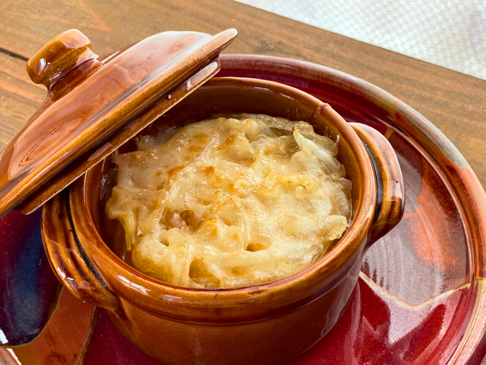
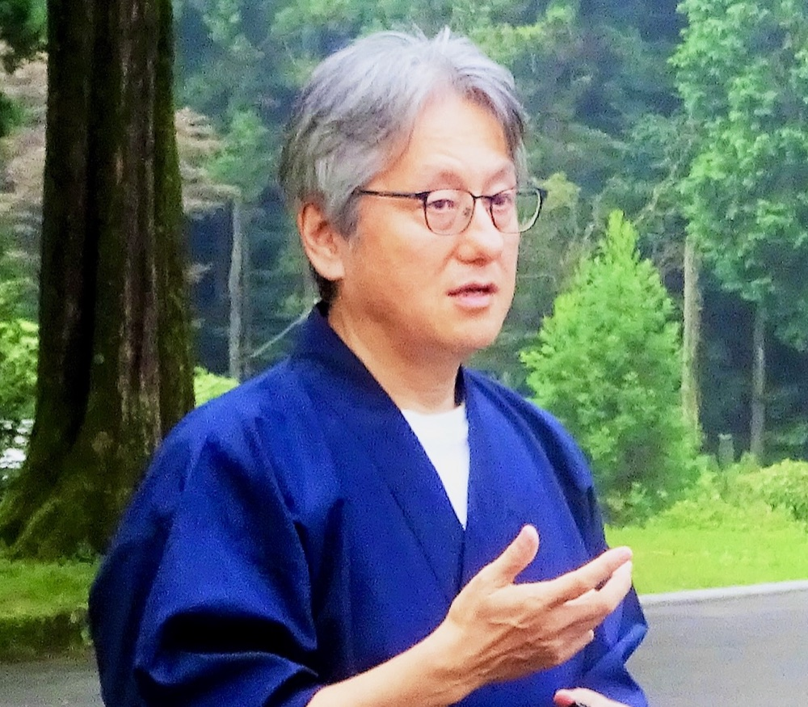

2026.11.21 SAT — 11.22 SUN｜HOLISTIC COLLEGE OF JAPAN
Holistic Retreat
メメントモリに生きる、
小さな一泊二日
食べる。感じる。休む。そして語り合う。
人生には、
前へ進むために頑張る時期があります。
そして、
立ち止まることでしか
見えない景色があります。
このホリスティックリトリートは、
知識を学ぶための時間ではありません。
忘れていた自分を、
静かに思い出すための一泊二日です。
この場所だから
できること
会場は、ホリスティックカレッジ・オブ・ジャパン。
ここは豪華なホテルではありません。
けれど、この場所には、映画を観て、語り合い、
同じ食卓を囲み、静かに眠り、
翌朝、新しい気持ちで目覚めるための
ちょうど良い空間があります。
一日目 — 向き合う
映画や対話を通して、自分と向き合う時間。
二日目 — 還っていく
食事と静かな時間を味わいながら、日常へ戻る準備をしていきます。
食べる

写真はイメージです夕食と朝食は、ホリスティック栄養学講師・丸元康生先生が長年伝えてこられた食の思想をもとにした食事をご用意します。
身体にやさしい食は、
心にも静かな変化をもたらします。
食べることは、単なる栄養補給ではありません。自分の身体を感じ、心を整え、今ここに戻ってくるための大切な時間です。
by Yasuo Marumoto 夕食・朝食付き｜食：丸元康生
感じる
答えを探す時間ではなく、
自分の中にある答えに耳を澄ます時間。
誰かと比べる必要も、
頑張る必要もありません。
ただ感じることを大切にします。
知識を増やすのではなく、今の自分が何を感じているのかに気づくこと。
そこから、静かな変化が始まります。
語り合う
少人数だからこそ生まれる、
安心して話せる時間。
話したくなければ、
無理に話す必要もありません。
誰かの言葉が、自分の人生を照らしてくれることがあります。
言葉にならない時間も、大切な対話です。
沈黙も、内省も、そのまま尊重される場です。
あなたのありのままで、安心して参加できます。
休む
カレッジ二階のシンプルな客室で宿泊します。
豪華さではなく、静けさと安心感を大切にしています。
翌朝、少しだけ心が軽くなっていること。
それが、このリトリートの願いです。
- カレッジ2階の客室に宿泊（シングルルーム基本）
- ご夫婦・親子・ご兄弟など、2名1室のご利用も可能
- 洗面所・トイレ・シャワールームは共用
このような方へ
- 01人生を少し立ち止まって見つめたい方
- 02忙しい毎日から少し離れたい方
- 03ホリスティックな生き方に関心のある方
- 04静かな対話を大切にしたい方
- 05ホリスティックカレッジの学びを、日常の中で育みたい方
- 06知識を増やすよりも、自分自身を感じる時間を持ちたい方
- 07心と身体を整える一泊二日を過ごしたい方
「これは、自分のための時間かもしれない」
そう感じた方のための場所です。
開催概要
| 日程 | 2026年11月21日（土）〜 22日（日）1泊2日 |
|---|---|
| 会場 | ホリスティックカレッジ・オブ・ジャパン |
| 定員 | 5名最少催行人数：3名 |
| 参加費 | 33,000円（税込）1泊2日宿泊・夕食・朝食・プログラム参加費を含みます |
| お食事 | Special Dinner & Breakfast by 丸元康生ホリスティックな食の思想をもとにした夕食・朝食 |
| 宿泊 | シングルルームを基本としております。ご夫婦・親子・ご兄弟など、お二人で一室をご利用の場合は、お一人30,000円（税込）となります。お申込み状況により、お部屋のご利用についてご相談させていただく場合がございます。 |
| 設備 | 洗面所・トイレ・シャワールームは共用となります。 |
少人数での開催のため、定員に達し次第、受付を終了する場合があります。
ファシリテーター

平田 進一郎
Holistic Educatorホリスティック教育を通して、多くの人が「自分らしく生きる」ことを支援してきました。このリトリートでは、知識を教えるのではなく、参加者一人ひとりが自分の内側に静かに触れていくための時間を共にします。
随想を読む →丸元 康生
食のファシリテーター｜ホリスティック栄養学講師食を通して、人が本来持つ力を引き出すことを長年探究されています。夕食と朝食では、丸元康生先生が伝えてこられたホリスティックな食の思想をもとにした食事をご用意します。
何かを学ぶ二日間ではありません。
何かを手に入れる
二日間でもありません。
忘れていた自分を、
静かに思い出す二日間です。
人生には、頑張ることで進める時期もあれば、
立ち止まることで見えてくる景色があります。
このリトリートは、本来の自分へ、
静かに還っていくための一泊二日です。
お申し込み
参加をご希望の方は、下記よりお申し込みください。
少人数での開催となるため、定員に達し次第、
受付を終了する場合があります。
ご不明な点がある方は、お問い合わせも受け付けています。